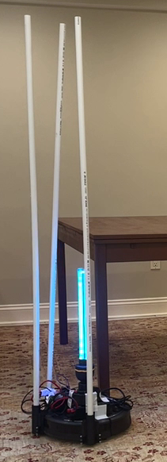
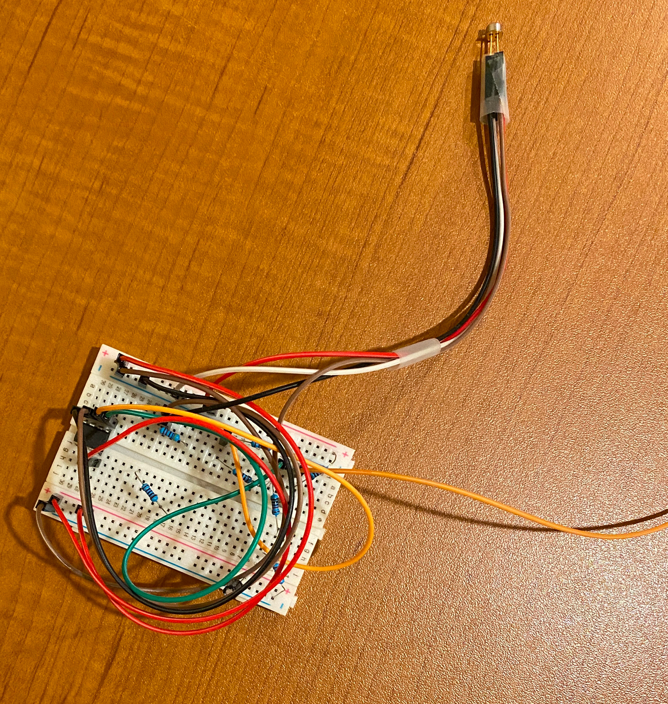
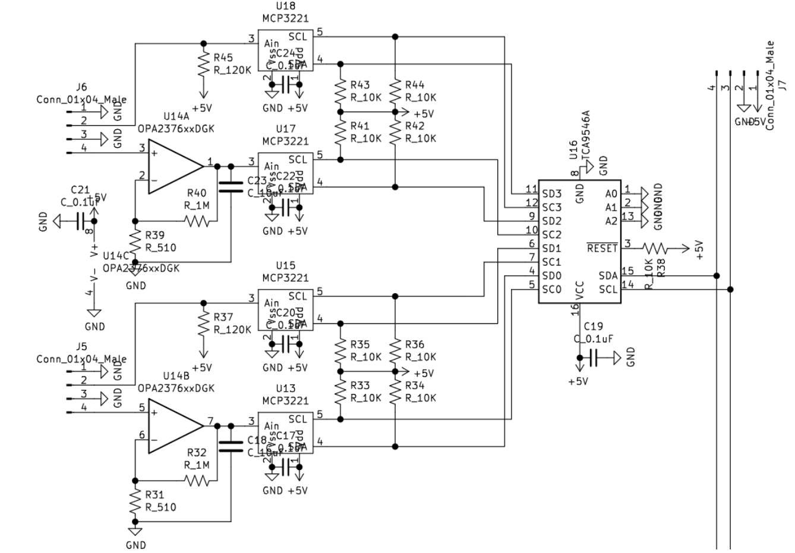
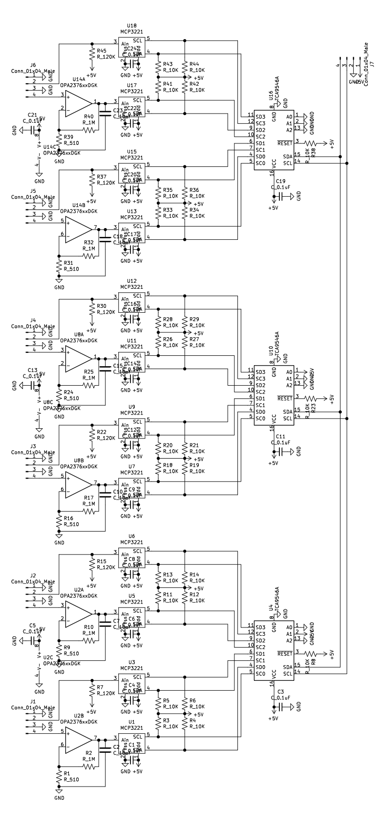
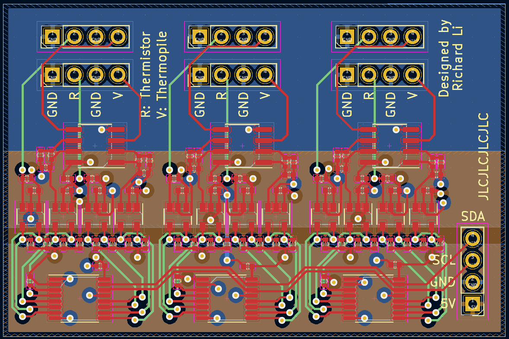
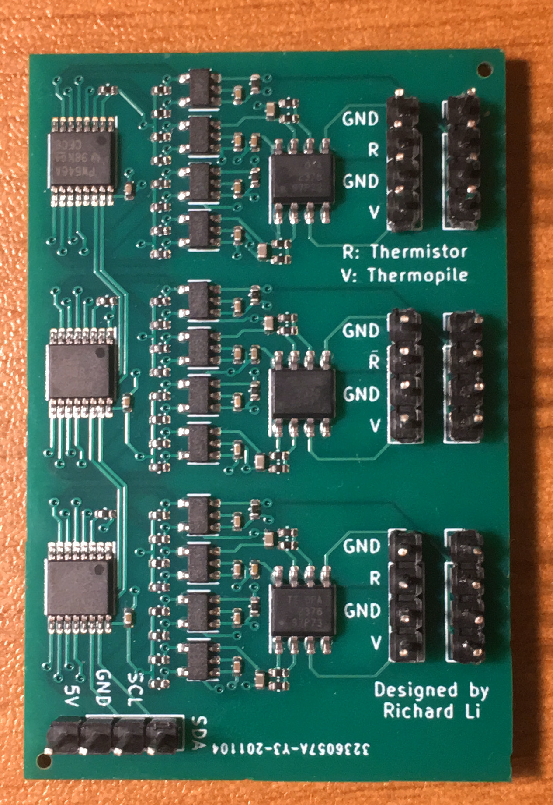
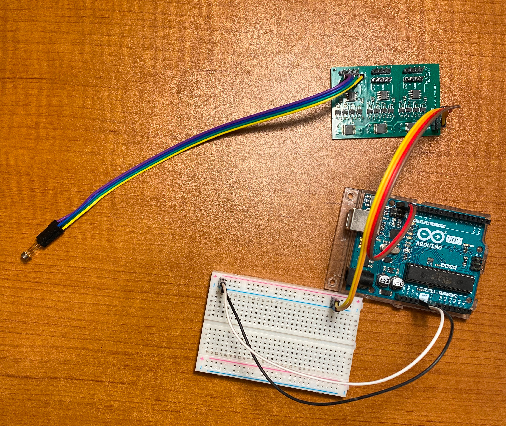

Background: To fight the COVID pandemic, I wanted to build a cost-effective way to disinfect surfaces. Although we now know that the COVID virus is primarily spread through aerosols rather than surfaces, keeping surfaces disinfected is always beneficial. Current methods of disinfection include wiping things down, which is labor-intensive and expensive. Stationary ultraviolet lights are another possible solution, but require people to move them and are likely to miss spots. Existing disinfecting robots are extremely expensive, costing upwards of $10,000 each, making them impractical for almost all users. By using commonly available consumer products, the price of this robot is significantly reduced while maintaining the same functionality.
Procedure: I first made a high level plan of the overall project: there would be a UV-C light on top of a robot vacuum with its own battery. The light would be controlled by an Arduino, which would also make it possible for the light to be turned off if a person walked near the robot. This feature is important for safety, because ultraviolet light is harmful to people. There would also be tubes mounted to the front bumper of the robot vacuum, which would allow the base robot to detect when the tubes hit an object, preventing the actual UV-C light from being hit.
The tubes were mounted to the front bumper through a 3d printed adapter, shown in figure 1. The 3d printed adapter was designed with a top and bottom segment which would clip onto the bumper, then be screwed together. The assembled mounting mechanism with the PVC pipe inserted can be seen in figure 2.
To detect people, infrared sensors are used. However, the infrared sensors require an amplifier, noise filter, and analog digital converter (ADC) to be usable. I first developed a prototype using a breadboard, shown in figure 3. However, this was messy, and could not be scaled up to work with multiple sensors. To fix this, I developed a printed circuit board (PCB) which miniaturized the functionality of the prototype, learning through online resources. My first step was to create a logical schematic of my prototype, which I then slightly improved on to create the schematic schown in figure 4. This schematic was designed to be a single unit, making it easy to simply add more units when more sensors were needed. I decided to use 3 of these units in each PCB as can be seen in figure 5. Then, I planned the physical layout, shown in figure 6. Finally, I sent the design to JLCPCB to be fabricated. The final product is shown by itself in figure 7 and assembled with an Arduino and infrared sensor in figure 8.
The Arduino is then able to switch the light on and off by switching the power to the light. The light must be powered by 120V AC power, so there is an inverter on board to convert the power from the 12V DC supplied by the battery to 120V AC. In between the inverter and battery, there is a relay, or an electronically controlled switch, which the Arduino controls.
Figure 1: Mechanism to attach PVC pipe to robot vacuum
Figure 2: Entire disinfecting robot
Figure 3: Infrared sensor circuit prototype
Figure 4: Single unit schematic
Figure 5: Whole PCB schematic
Figure 6: Board layout
Figure 7: Finished PCB
Figure 8: Finished PCB with Arduino and thermal sensor